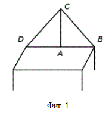

Беседа 3000 от 3877 · Беинса Дуно
Единният закон
Отче наш.
Изпейте „Махар Бену Аба“.
Имате ли зададена тема? – /Имаме/ – Четете. – /Чете се темата: „Идейният живот според нашето разбиране“./
Пишете тема: „Икономия в природата“.

Вие понякой път мислите, че имате спънки в живота. Къде ще турите спънката в едно пространство, което има три точки? Де ще турите спънката? Може ли да турите някъде някаква спънка? Не може да съществува никаква спънка, понеже човек е в хармония със себе си. Спънката винаги произтича отвън, не произтича отвътре. От едно заблуждение, когато човек напусне вътрешното равновесие, тогава се заражда някаква спънка. Представете си сега, че вие седите прави. Изведнъж вие се навождате в едно направление, вие може да паднете. Питам: Какви са подбудителните причини за вашето навождане? Защото, да кажем, едно дърво го наведете, наведете повече, отколкото трябва и то се счупва. Значи, щом се счупи един клон на дървото, кой е причината? Дървото само по себе си може ли да се счупи? Причината най-първо е вятърът. Подбудителната причина за счупването е вятърът. Втората причина: Може да се качи някое животно или човек, или някоя птичка и да счупи някой клон. Но първата причина е вятърът. Вятърът има ли намерение да счупи този клон? Следователно, ако ние дадем следното разсъждение, да уподобим вятъра на човешката мисъл. Само човешката мисъл дава условие да се пречупи някой клон. Значи, човешката мисъл може да даде един подтик да измените вашето направление. Да кажем, вие мислите, вървите по известна посока, друга мисъл се зароди и може да измени посоката на вашия път. Ако тази посока не е хармонична, тогава става пречупване. Дървета, които с хиляди години са имали тази опитност, някои от тях са направили клоните си гъвкави. Както и да ги увивате, може да направите цял кръг, не се чупят. Изисква се голямо упражнение, иска се да направят някое акробатство. Онези, които не могат да правят акробатство, се пречупват. Считат туй пречупване вреда. Растението, след като правило хиляди пъти тия упражнения, станало толкоз гъвкаво, клоните започват да се превиват. Онази крива линия, която показва гъвкавостта, колкото и да се превиват, да се не чупят.
Ако човешкият характер може да се пречупи, какво показва? Какъв е характерът, ако може да се пречупи? – Показва, че не е гъвкав. Не може да устои на външните условия. На духането на вятъра не може да устои. Духането на вятъра както у растенията.
Да се повърнем сега към този триъгълник. Вие изхождате от A до B, имате едно понятие за света. Изхождате AB, ABC. Тогава, ако вземете мярката AB, представя вашето физическо отношение на физическото поле. BC показва какви трябва да бъдат отношенията в духовния свят и ако AC показва какви трябва да бъдат отношенията в умствения свят или в Божествения свят, значи ние вземаме тази фигура. AB, това е границата на физическия свят. BC, това (е) границата на духовния свят и CA е граница на умствения свят или Божествения свят. Следователно, вие имате един триъгълник, който граничи с трите свята. Като изучавате триъгълника, кой свят върху вас влияе повече, линията AB се увеличава. Тогава какъв е законът? В един правоъгълник или в един остроъгълник, при кой ъгъл имаме по-голяма линия, по-голяма граница? При правия ъгъл имаме по-голяма граница. При по-голям ъгъл имаме по-голяма граница. При голям ъгъл линиите са по-дълги, а при по-малкия ъгъл линиите са по-къси. Следователно, когато правият ъгъл се увеличава, къде ще се увеличава, къде ще се увеличава и триъгълникът? Перпендикулярът показва, че се удвоил ъгълът. Ако го прокараме в една крива линия, в една окръжност, той е извървял половина път на окръжността, 180 градуса. Имате два прави ъгла. Казвате, че сборът от ъглите в един триъгълник е равен на два прави. Туй е в количествено отношение. Но ако този триъгълник е в движение, когато тази линия на физическото поле се удвои, тук вече имате два прави ъгъла, но вие вече сте излезли от областта на триъгълника. Вие имате четири точки. Петата точка имате отвън. Да кажем, имате М, Н. Тия точки ви дават понятие за един друг свят. За един свят, който е триизмерен. Сега, този триъгълник идеален ли е или е произволен? Откъде са го взели? Човек отде го е взел? Отде му дошло на ума? Той е взел някой образ. Идеята за триъгълника е взета от носа. Тия двата триъгълника показват, че човек най-първо като слязъл на физическото поле, е започнал със своето тяло. Тия двата прави ъгли показват, че той започнал със строежа на тялото, започна да се занимава с физическия свят – първото нещо.
Та казвам: Вие понякой път искате да станете по-духовни. Вие не може да станете духовни, докато не сте работили на физическото поле, да разберете законите на физическия свят. Ще разберете законите на духовния свят. Тогава ще разберете BC, законите на духовния свят. След като поработите върху вашето духовно тяло, ще разберете законите на Божествения свят, от B към A. Сега, като изучавате триъгълника, AB какво представя, на какво е равна? Те са двата катета. На какво са равни катетите? AB е равно на BC, равно на AC. Ако тия катети са равни един на друг, следователно и ъглите, и те ще бъдат равни. Ако се измени туй равенство на катетите, ще се измени равенството на ъглите, ще се изменят възможностите. Да допуснем, че вие знаете и може да продължим линията BC, на какво е равна тя? Тогава CB в дадения случай в правоъгълния триъгълник на какво е равна? BC е равна на AB, BC. Нали казвате, че двата остри ъгла в правоъгълния триъгълник са равни на правия? То е така. Тогава, ако трите граници на триъгълника са равни една на друга, какъв триъгълник имаме? – Равностранен. Да се придобие това равенство, какви са законите? Там е всичката мъчнотия. Да кажем, ако вие държите ръката си простряна и я свивате, какво развивате, умствена сила или физическа? Ако вземете един плод, една ябълка и я стискате в ръката – децата обичат така да стискат ябълките – каква сила развива детето в себе си, физическа ли сила развива или каква? Коя линия развива в триъгълника? – BC. Тогава вземеш тази ябълка и изваждаш малките семена, които се намират в ябълката, посаждаш в земята, тогава развиваш CA или AC. Каква разлика има, ако кажем AB. Но може да започнем така: AC, CB, BA. Зависи откъде сме започнали. Може да започнете от A към C или може да започнем от C към A. Ще дадем една посока от A към B, показва движение към крайния предел на физическия свят. B е крайната точка на физическия свят. От C като се движиш, имаш вече двуизмерен свят. Влизаш в духовния свят. BC е граница на духовния свят. По какво се отличава духовният свят, как определяте вие духовния свят? Едно елементарно понятие. Не някакво физическо понятие, но елементарно понятие. Да кажем, разправяте на едно дете, какво ще му разправяте какво нещо е духовният свят? Когато близнеш със своя език, какво усещане добиваш? Вкусът е плоскост. Мислите ли, че в Божествения свят има вкус? Там в какво седи вкусът? Ако влезеш в Божествения свят, тия възвишени същества не вкусват ябълките, но едно същество от един възвишен свят, като вкуси твоята мисъл, почувствува дали е сладка. Обаче вашата мисъл вие не може да (вкусите). Вашата мисъл (не) може да я вкусите, какъв резултат, коя мисъл преодолява. Обаче в Божествения свят, човешките мисли се вкусват, дали са сладки или горчиви. Затова една ваша мисъл, като вкусят и е сладка, казват: „Вие мислите добре.“ Ако не е сладка, изхвърлят, казват, че не е добра. Вашата мисъл не може да ходи на този пазар, не може да ходи на изложение. Защото в едно изложение може ли да се тури някаква карикатура? Художниците представят някой път карикатури, но каква ще бъде? Може ли да се тури една карикатура в едно изложение? Вие може ли да се представите за изложение в Божествения свят? Кой би ви взел да ви изложи? То е невъзможно. В тази форма, в която сте, не може да ви изложат. Комисията, която приема картините, няма да ви приеме. Всеки един от вас ще бъде върнат. Вие може да кажете: „Баща ми, майка ми.“ Казват: „Тук не се приемат такива картини. Не са художници тия, които са изработили картината.“ В Божествения свят, за да влезе нещо, то трябва да е художествено изработено, безпогрешно. Да бъде една хубава картина. Значи, една мисъл, за да влезе в Божествения свят, трябва да има сладчина. Сладчината, това е красотата на Божествения свят. Следователно, красивите неща на земята са сладки в Божествения свят. Сладките неща в Божествения свят са красивите неща в духовния свят и на земята. Ние говорим за тия трите свята, които съставят методи или начини за самовъзпитание или саморазвитие на човечеството. Сега вашата мисъл е, че вие искате да бъдете духовни, без да знаете как да започнете. Вие искате да имате нещо Божествено. По някой начин ще влезете в Божествения свят. Ако вие не сте работили от A до B, ако не сте работили в тялото си, ти не можеш да работиш и в чувствата си. Ако не си работил в чувствата, ти не можеш да работиш и в ума си. Или другояче казано: Ако не си работил във физическия свят, ти не може да имаш отношение и в духовния свят. Ако не си работил с духовния свят, не можеш да имаш отношение и с Божествения свят. После, ако не си работил с Божествения свят, не можеш да имаш достъп до физическия свят. Сега, за да дойде човек на земята или правото е негово, че той е работил, или пък през границата някой го изпраща. Ако вие може да слезете на физическия свят на ваши разноски, вие сте работили. Пък може да сте дошли на физическия свят други да ви издържат. Тъй, както аз виждам, вие почти всички се издържате. Тъй, както се вижда, няма нито един, който да е на собствени разноски. В Божествения свят все имате благодетели, които ви изпращат тук да учите. Говоря фигуративно, това е вярно. Тъй щото вие сте ученици на физическото поле, изпратени от Божествения свят в странство да учите. Следователно, трябва добре да учите. Понеже тези, които са заинтересувани от вас, отгоре често питат как се учите на земята, кое ви интересува. На физическия свят кое ви интересува сега? Кое ви интересува най-много? Я ми кажете нещо, кое ви интересува конкретно? Сега някои ще ми разправите, някоя карикатура. Не, хубави неща има на физическото поле. Да се движи човек от A до B. Първото нещо, да направиш една хубава стъпка, тъй да я вземеш хубаво. Ти, като се научиш да стъпваш хубаво, то е една голяма магия. Възможност е това. Ти като проточиш крака си, да стъпиш, то е вече математика. То е един математически предмет. Защо в математиката се занимават с онази отмереност, в която силите и мислите действуват? Математиката е наука от Божествения свят, която определя силите. Да изчисляваш с каква сила да проектираш своята мисъл или да се подвижиш. То се изисква много тънко изчисление, да не бъде нито много слабо, нито много силно, да бъде точно изчислено. Второто положение, първото е да се премести кракът, второто положение, което ти научаваш на физическия свят, кое е? – Да хванеш за ръката, че като хванеш, да знаеш как да се лекуваш. Първият предмет е да знаеш как да се лекуваш. Първият предмет е да знаеш как да си движиш краката – предметно учение на физическото поле. Второто предметно учение е да знаеш как да употребиш ръката си. Следователно, двете неща, с които хората започват на физическия свят, е: Движението на краката и движението на ръцете. Има и други движения. Сега покажете второто движение на чувствата, и второто движение на Божествения свят. Сега вие си помислете, размишлявайте върху тия работи. Туй са дадени неща, трябва да ги възприемете. Но има един закон в човека. Всяко нещо, което е вярно на физическото поле, всяко нещо, което е вярно в духовния свят и всяко нещо, което е вярно в Божествения свят, всякога придава сила на човека. Придобивка има. Всяко нещо, което не е вярно на физическото поле, всяко нещо, което не е вярно в духовния свят и всяко нещо, което не е вярно в Божествения свят, имаме загуба. Тъй щото щом губиш, нещата са неверни. Щом има печалба, щом едно нещо е вярно на физическото поле, вярно е и в духовния свят, вярно е и в Божествения свят. Щом нещо не е вярно на физическия свят, не е вярно и в духовния свят, не е вярно и в Божествения свят. Щом нещата са верни в духовния свят, верни са и в Божествения свят, верни са и във физическия свят. Туй, което е вярно в Божествения свят, вярно е във физическото поле, вярно е и в духовния свят. Казвам: Туй, което е вярно, винаги придава една микроскопическа придобивка. Туй, което придобиваш, то е мярката. Щом имаш придобивка с каквато и да е мисъл, щом имаш придобивка с каквото и да е чувство, щом имаш придобивка с каквато и да е постъпка, туй чувство, тази мисъл, тази постъпка е права. Щом имаш вътрешна дисхармония, не си доволен, трябва да се завземеш да изправиш, да дойдеш до правата посока, да се движиш правилно. Казвам сега: Как трябва да се постъпи? Значи, коя е правата постъпка? Правата постъпка е като се подвижиш, да (не) се изхарчи повече енергия, отколкото трябва. Погрешката може да бъде, че харчиш повече. Някой път погрешката може да е, че икономисваш повече. Че в природата такива икономии няма. В природата всяка сила, която е дадена, трябва да я изхарчиш, ни повече, ни по-малко. Нищо не трябва да задържиш за себе си. Следната минута, която ще направиш, ще дойдат други сили. Всяка сила трябва да бъде употребена на място. Щом се зароди желание да икономисваш или да харчиш повече, ти си в кривата посока. Сега това е нов начин на възпитание. Аз ви давам един метод много прост. Вие, съвременните хора казвате: „Да имаме един гениален ум, гениални постъпки.“ Гениална постъпка е, ако знаеш да постъпваш право. Значи, когато ти вървиш и хванеш един човек за ръката, правилата ги имаш. Този човек трябва да има в тебе едно Божествено желание. Туй желание трябва да бъде благородно. Туй желание трябва да бъда справедливо, после трябва да бъде красиво и не трябва да има никакъв недоимък. Всичко туй показва ръката. Когато малкият пръст окъсял, много сте харчили. Защо окъсял малкият пръст? – Много сте харчили. Ако започнете да икономисвате, продължава се. От много харчене побелява главата. Той насила е отпущал, отпущал, глобяват го и от глоби той е станал малък. Несъзнателните погрешки на хиляди поколения са скъсили малкия пръст. Сега какво разбрахте? Правото във физическия свят е право в духовния свят. Правото в духовния свят е право в Божествения свят. Правото в Божествения свят е право във физическия свят. Правото е едно във всички светове. Господствува един закон.
Само светлият път на Мъдростта води към Истината.
В Истината е скрит животът!
XVIII година.
24 лекция на Младежкия окултен клас,
държана от Учителя на 14 април 1939 г., петък, 5 ч. с.
София – Изгрев.